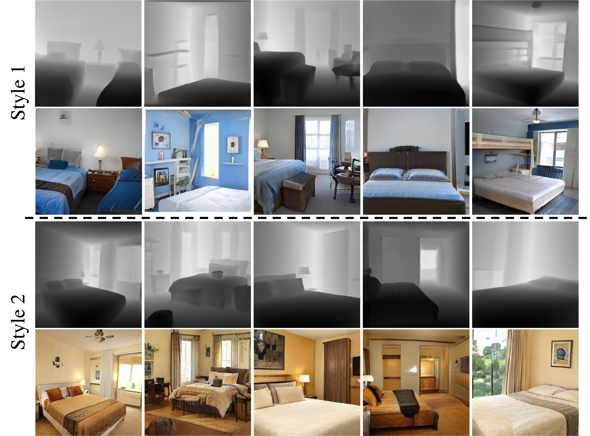

Results
Qualitative comparison between DepthGAN and existing alternatives.
Diverse synthesis via varying the appearance latent code, conditioned on the same depth image.
Diverse geometries via varying the depth latent code, rendered with the same appearance style.
 |
 |
|  |

Comment: Proposes voxelized and implicit 3D representations and then render it to 2D image space with a reshape operation.